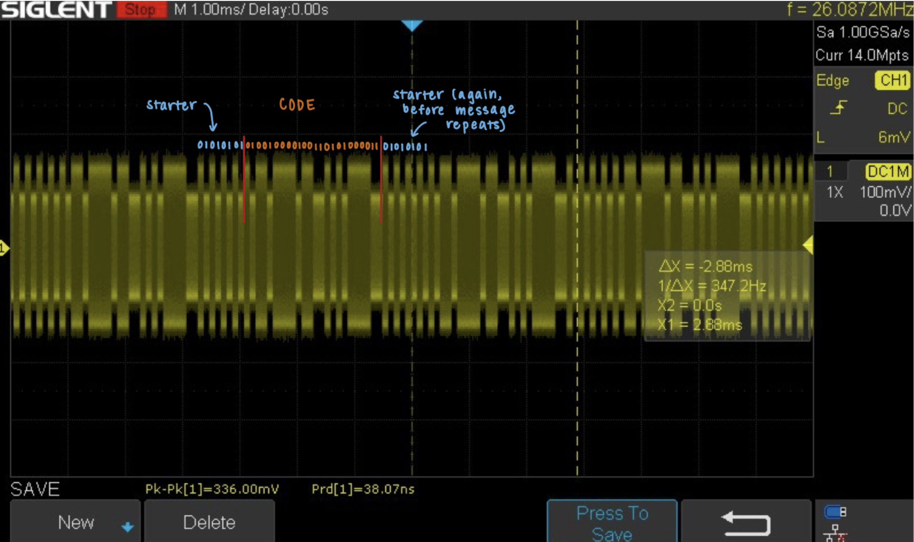
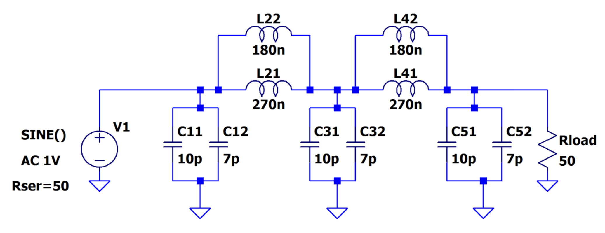
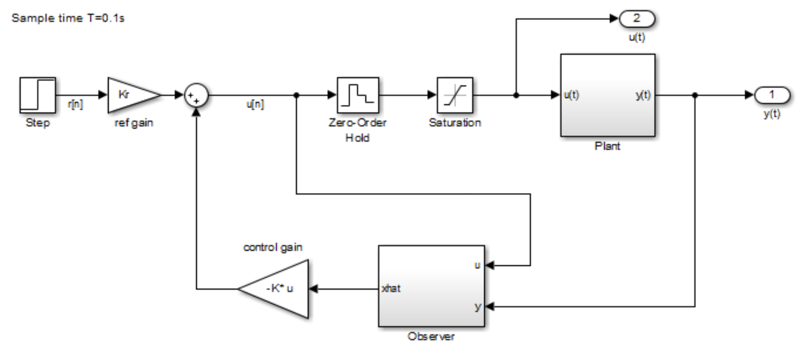
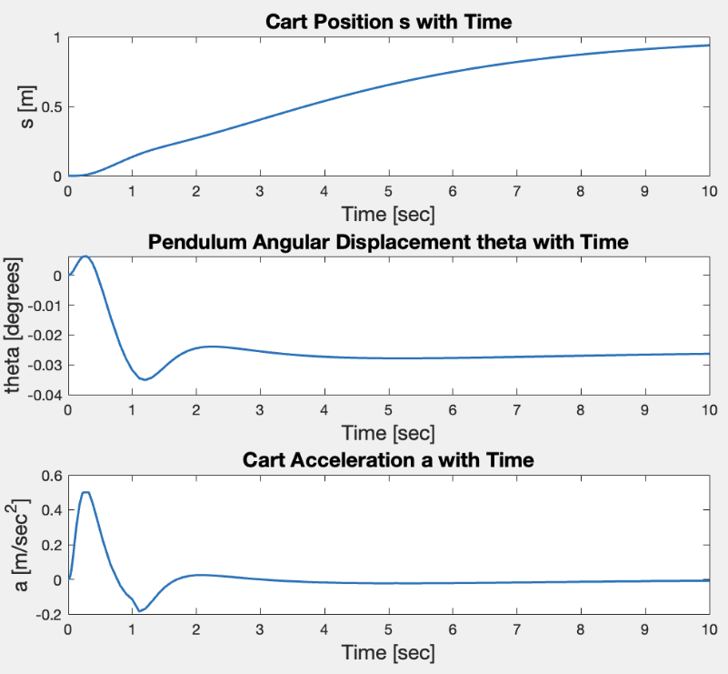
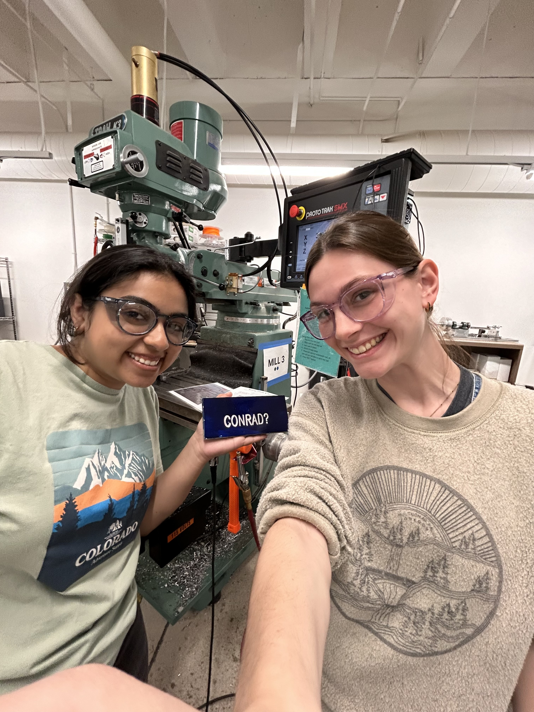

Projects in Microprocessor-based Systems
I am currently taking the class ENGR155: Microprocessor-based Systems: Design & Applications. This course is entirely project-based, so follow along here as I gain experience with digital design, FPGAs, microcontrollers, and embedded programming!
RF Receiver and Communication System


In ENGR157: Radio Frequency Circuit Design, I designed and built a receiver capable of decoding a secret message being sent from a transmitter in our RF lab. My receiver using a direct down-conversion architecture, and I built it using Mini Circuits modules. I used a receive antenna, whose S11 and radiation pattern I gathered, along with amplifiers, a mixer, and a low-pass filter around a 2.25 GHz local oscillator to realize the full RF chain.
I performed careful analysis of the receiver’s expected and experimental performance by creating a link budget spreadsheet, which shows the expected and measured signal power, noise temperature and power of distortion products at each stage. I captured spectra at each stage of the receiver chain to confirm proper operation, identified and filtered out blocker and WiFi signals, and decoded the transmitted binary stream into the ASCII message “HMC.” In addition, I characterized the receiver’s nonlinearity by measuring its input intercept point (IIP3) and comparing it with analytical predictions, highlighting the impact of distortion products on real-world performance. Although analytical models predicted a much longer range, the receiver reliably detected the signal up to ~80 meters before hitting the noise floor.
This project strengthened my expertise in RF system integration, link budget analysis, spectrum analysis, nonlinear characterization, and practical measurement techniques. It provided experience in bridging theoretical predictions with real-world behavior, validating each stage of an RF system, and overcoming challenges in experimental testing. Check out my final report here to learn more about this project in detail!
RF Ladder Filter Design


In ENGR157: Radio Frequency Circuit Design, I designed, simulated, and tested a 5th-order Butterworth low-pass filter to meet specific requirements: a 100 MHz passband edge, at least 20 dB rejection by 200 MHz, less than 1 dB of in-band ripple, and under 3 dB insertion loss. Starting with analytical calculations from filter design tables, I derived component values and verified the design through LTSpice simulations.
I then adapted the design for implementation on a PCB, accounting for board parasitics and practical component availability. By scaling capacitor and inductor values, I was able to counteract parasitic effects that shifted the frequency response, ensuring the measured filter response aligned with theoretical predictions. In the end, my design met all of the required specifications.
This project strengthened my understanding of RF filter design, parasitic effects, and the importance of matching analytical, simulated, and measured results. It also gave me hands-on experience in PCB-based RF implementation, troubleshooting discrepancies between ideal and real systems, and validating performance with network analyzer measurements. See my final report here to learn more details about my design and implementation!
Autonomous Underwater Robot


In ENGR80: Experimental Engineering, I worked on a team to design and build an autonomous underwater vehicle (AUV) capable of measuring current velocity at different depths. Our AUV integrated a Teensy microcontroller, IMU, GPS, pressure sensor, thermocouple, and flex sensor in a waterproof housing, with a proportional control algorithm enabling autonomous dives, data collection, and resurfacing.
We calibrated and validated the flex sensor using the Harvey Mudd wind tunnel and a gantry crane in a freshwater tank, applying similitude principles to model ocean currents. COMSOL simulations of hydrodynamic drag complemented these experiments, helping refine our design. Field tests at Phake Lake and Dana Point Harbor confirmed reliable depth tracking with the pressure sensor and meaningful velocity measurements across different current conditions.
This project strengthened my skills in embedded systems, sensor design and calibration, and control algorithms, while giving me hands-on experience with COMSOL modeling, experimental testing, and applying fluid dynamics principles to real-world prototypes. I also gained a lot of team-working skills, as this project was most definitely a team effort! Learn more technical details about our project here in our final report.
Zipline Speed Control System Design


In ENGR72: Applied Mathematics for Engineers, I worked on a design project to model and optimize an active speed control system for a zipline. The goal was to ensure that riders of different masses completed the ride safely without exceeding an exit velocity of 5 m/s, while maximizing the ride experience for the average rider.
I modeled the catenary shape of the cable and applied the governing equations of motion for riders of different masses. Using MATLAB, I developed simulations of velocity profiles and implemented the constraints with a nonlinear optimization solver, optimizing variables such as cable tension and vertical drop while ensuring safe exit speeds and acceptable rope tension. My final solution ensured that all design constraints were met. The model also highlighted tradeoffs between maximizing performance for the average rider and maintaining safety across a wide range of conditions.
This project strengthened my skills in formulating physics-based optimization problems, implementing nonlinear constraints in MATLAB, and balancing safety, performance, and design feasibility through computational modeling. Check out my report here, as I work through the steps of designing the zipline and implementing the optimization.
PI and State Feedback Digital Controller for Analog Circuit

In ENGR102: Advanced Systems Engineering II, I worked on a project to design and implement a digital controller for an overdamped RC circuit. The objective was to meet performance specifications such as minimizing overshoot, ensuring zero steady-state error, and achieving a fast settling time, all under real-world constraints like limited input voltage and discrete sampling.
I began by modeling the system in MATLAB and Simulink, then designed and tested a PI compensator in both continuous and discrete time. After validating the design through simulations, I implemented the controller on an Arduino Uno to regulate the physical RC circuit. To further improve performance, I also designed an observer-based state feedback controller, tuning it in MATLAB and confirming its effectiveness through both simulation and hardware testing.
This project strengthened my skills in digital control design, MATLAB/Simulink modeling, and embedded system implementation, while giving me hands-on experience bridging theoretical design methods with experimental hardware results. Find all the steps that I took to implement this controller in here in my report!
Inverted Pendulum State Space Control


In ENGR102: Advanced Systems Engineering II, I worked on the classic problem of stabilizing an inverted pendulum on a moving cart, an inherently unstable system. The objective was to design a controller that moved the cart to a target position within 10 seconds without overshoot, while keeping the pendulum upright under disturbances.
I modeled the system in MATLAB and Simulink using a state-space representation, then designed a state feedback controller with integral action and an observer to estimate unmeasured states. By tuning controller and observer poles, I achieved stable performance in simulation, with the cart reaching its target smoothly and the pendulum maintaining near-upright stability.
This project strengthened my skills in state-space control, observer design, and MATLAB/Simulink modeling, while giving me experience with stabilizing unstable systems and balancing robustness with performance. Check out my final report here for more details!
Digital and Analog Filter Design

In ENGR101: Advanced Systems Engineering I, my team designed and tested both analog and digital filters to generate a clean sinusoidal signal from a pulse train input. We built a fourth-order Butterworth low-pass filter using a two-stage Sallen-Key op-amp circuit and implemented a modified comb filter digitally on an Arduino microcontroller.
We analyzed the system using Fourier series methods and frequency response functions, then validated our design experimentally with FFTs of the input and output signals. To improve accuracy, we applied windowing techniques such as the Hanning window and compared measured versus theoretical results, identifying key sources of error such as component tolerances, sampling limitations, and noise.
This project strengthened my skills in analog and digital filter design, hands-on circuit implementation, signal processing with MATLAB, and embedded programming on Arduino, while also teaching me how to troubleshoot discrepancies between theory and experimental results. Find our final report here for more details!
Auditory Cueing System


In ENGR164: Introduction to Biomedical Engineering, I worked on a team project to design a wearable auditory cueing system aimed at improving Freezing of Gait (FoG) in patients with Parkinson’s disease. Our solution was a compact, metronome-based device that delivered rhythmic auditory cues to help synchronize stepping and initiate movement.
I designed and tested the electronics using a 555-timer–based circuit, and implemented this on a custom PCB to improve reliability and portability. I also helped with the mechanical design of the housing in SolidWorks that allowed patients to easily wear the device while ensuring durability and accessibility to the control knob and speaker.To evaluate the prototype, we conducted user testing with healthy participants to measure gait synchronization, multitasking performance, and usability. Analysis of video data showed strong alignment between foot strikes and metronome beats, supporting the device’s potential as a low-cost, user-friendly intervention for gait rehabilitation.
This project gave me hands-on experience in PCB design, 3D mechanical design, and human-centered testing, as well as insight into how engineering principles can translate into meaningful biomedical solutions. Find our final report here for more detail on our research, methods, and design!
Electromyogram Sensing Circuit

In ENGR84: Electronic and Magnetic Circuits and Devices, I worked on a team project to design and build an electromyogram (EMG) circuit for measuring electrical activity in the bicep during muscle contraction. The goal was to capture the millivolt-level signals produced by skeletal muscle and process them into a readable output using amplifiers and filters.
Our design used an instrumentation amplifier with an offset stage to safely amplify the input signals, followed by a bandpass filter to isolate relevant frequencies. We simulated the circuit, then implemented and tested it on a breadboard, troubleshooting challenges such as AC vs. DC coupling, amplifier rail limits, and loading effects, troubleshooting with design modifications like dual-rail powering and buffering.
This project strengthened my skills in analog circuit design, simulation, breadboarding, and troubleshooting, while giving me practical experience applying instrumentation amplifiers, filters, and signal conditioning concepts to biomedical signals. Find more details about this project in our report here.
RF Oscilloscope Cable Fixture

In ENGR4: Introduction to Engineering Design and Manufacturing, I worked on a team project to design and build a shelf system to support long coaxial cables for the time domain reflectometry (TDR) experiments in the HMC RF course. The goal was to stabilize cable connection points, minimize strain on connectors, and improve the accuracy of oscilloscope measurements, all within the space constraints of a lab bench.
We iterated through several prototypes before finalizing a wooden shelf model with eight BNC passthrough mounts on one side. I contributed to the design and construction process in the HMC Wood Shop, where we built the structure, waterproofing the wood to prevent conductivity issues and reinforcing the shelves to hold the weight of up to 50 feet of cable. We carefully considered ergonomics, ensuring that shelves were spaced to allow hand access for connecting and disconnecting cables. Through evaluation with our client, the prototype proved stable, non-conductive, and able to support heavy cable loads without disrupting signals.
This project strengthened my skills in rapid iterative prototyping, hands-on manufacturing, and client-driven design, while showing me how thoughtful engineering can improve both usability and experimental accuracy. It also introduced me to the open-ended, team-based nature of engineering design problems and to foundational concepts in design theory, manufacturing methods, project management, and engineering ethics. Find our final report memo here!
Machine Shop
I’ve been a machine shop proctor for over 4 semesters now! As a proctor, I ensure that all users (5C students and professors) are safe and feel supported in their machining projects. I provide design and manufacturing advice/help to users in the metal and wood shops, which means I have a lot of experience operating mills, lathes, bandsaws, sanders, and more! ENGR4 students are some of the most popular users, as they make a hammer from scratch following tight tolerances. Other users include Engineering Clinic students who are solving creative and challenging problems for their clients, as well as users pursuing a variety of personal projects!
I also spend a lot of time in the machine shop working on my own projects, which have ranged from things for courses (ENGR4 hammer and clinic) to gifts for friends! Below are some pictures of some of my projects (wooden pen, metal ring, my hammer!).


